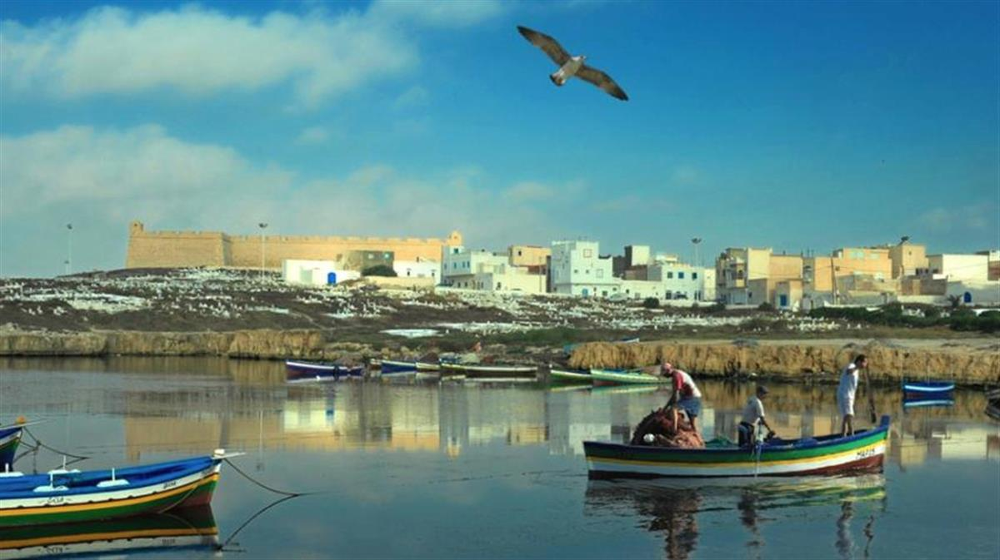
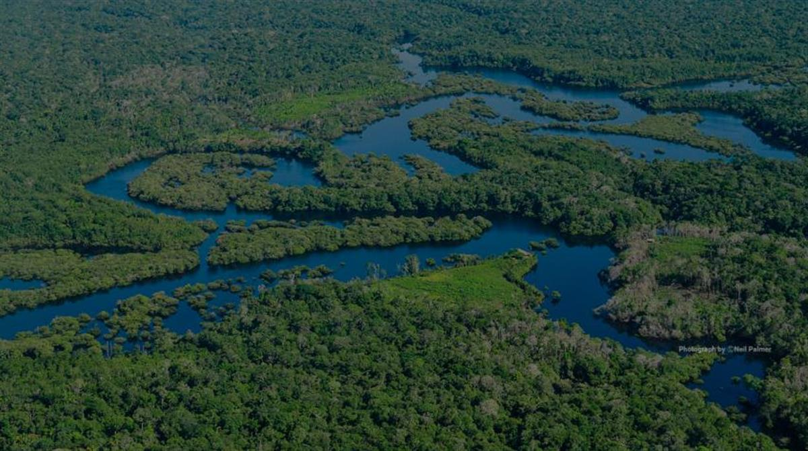

10 EVENTS TO LOOK OUT FOR IN THE NEW YEAR
Why 2022 will matter for climate action
As the world picks up speed in its race against climate change and moves forward from the 2021 Glasgow Climate Change Conference, let’s look at ten key global events in 2022 that will shape critical conversations and influence public policy decisions around one of the most defining issues of our time.
23 - 27 January | 5th UN Conference on Least Developed Countries (LDC5) | Doha, Qatar
There are 46 countries, spanning from Afghanistan to Zambia, that are considered Least Developed Countries (LDCs). They are home to about 13 percent of the world’s population and 40 percent of its poorest people. They are highly vulnerable to countless shocks - from economic, public health to climate change. They remain at the forefront of the climate crisis and are disproportionately affected by extreme weather events. And unfortunately, they lack critical financing to support climate-resilient measures and infrastructure.
On 25 January, LDC5 - a conference that happens every 10 years - will include a high-level thematic roundtable on climate change to discuss the unique and urgent issues that LDCs face and the necessary support that they need to ensure that much-needed economic growth does not take place at the expense of their already fragile ecosystems and diminishing natural resources.
February - October | IPCC Assessment Report | Global
The Intergovernmental Panel on Climate Change (IPCC), which publishes assessments of climate science every six to seven years, will launch its first comprehensive assessment report since the adoption of the Paris Agreement in 2015.
The IPCC’s Sixth Assessment Report (AR6) will encompass contributions from three working groups led by some of the world’s leading scientists on the physical understanding of the climate system and climate change [Working Group I - published in August 2021]; the impacts of climate change [Working Group II]; and the progress on mitigation and efforts to limit emissions [Working Group III].
21 February | Working Group II Report | Impacts, Adaptation and Vulnerability
Thisreport will cover the impacts of climate change on human and natural systems, observing their vulnerabilities, ability and limitations to adapt to climate change. It will look at options for creating a sustainable future through an equitable and integrated approach to mitigation and adaptation efforts at all scales.
28 March | Working Group III Report | Mitigation of Climate Change
This report will focus on global and national efforts to mitigate the devastating and varying impacts of climate change, looking at innovation and solutions in energy and urban systems, and in sectors such as agriculture, forestry and land use, buildings, transport and industry. It will look at the link between short to medium and long-term plans to curb emissions, highlighting the importance of governments’ national action plans, the nationally determined contributions (NDCs) under the Paris Agreement.
3 October | Synthesis Report | Climate Change 2022
Finally, the Synthesis report, which will integrate contributions from the three Working Groups as well as from the Special Reports produced within the cycle - Global Warming of 1.5C; Climate Change and Land; and the Ocean and Cryosphere in a Changing Climate - will be launched ahead of COP27.

Climate change is impacting Tunisia's coastal zones, in North Africa, affecting both humans and marine biodiversity. | UNDP Tunisia
28 February - 3 March | Middle East and North Africa Climate Week 2022 | Dubai, UAE
The first-ever Middle East and North Africa Climate Week,organized by UN Climate Change (UNFCCC), marks a significant milestone in the lead up to COP27 which will take place in Egypt in November.
Hosted by the Government of the United Arab Emirates with support from United Nations and other multilateral and national agencies, the climate week will focus on regional climate action and collaborations needed to build climate-resilient economies and societies, and integrate climate action into pandemic recovery.
Main events will take place at the Dubai Exhibition Center, which is currently hosting Expo 2020.
25 April - 8 May | UN Biodiversity Conference (Part Two) | Kunming, China
The UN Biodiversity Conference, which was expected to take place in 2020 in China, has now been split into two parts. In October 2021, the first parthelped to set the stage for the next meeting in the Spring of 2022, with the adoption of the Kunming Declaration, which calls on countries to negotiate and agree on a global biodiversity framework, and the establishment of the Kunming Biodiversity Fund which saw commitments from China, France, the European Union, Japan and others.
The second part, which is expected to resume with in-person sessions, will mark a major moment for global biodiversity with the adoption of the framework that will redefine our relationship with the natural environment. It will include 21 targets and 10 ‘milestones’ to be achieved by 2030, with net improvements by 2050 - including the conservation and protection of at least 30 percent of the planet’s lands and ocean.
Countries had until 2020 to reach the targets of the last framework, known as the Aichi Biodiversity Targets. Despite some progress, the targets – which range from stopping species from extinction to cutting pollution and preserving forests – were not achieved. The post-2020 framework will be critical in addressing the ongoing decline in biodiversity.

Forests photo campaign marked 200 days until the XV World Forestry Congress. | Neil Palmer2 - 6 May | XV World Forestry Congress 2022 | Seoul, Republic of Korea
Eliminating emissions from deforestation and promoting forest regrowth and landscape restoration could reduce global net emissions by up to 30 percent. Over the next decade, forests could provide as much as 50 percent of the cost-effective mitigation available.
Taking place under the theme, Building a Green, Healthy and Resilient Future with Forests, the World Forestry Congress will focus on six sub-themes, including reversing forest loss, sustainable use of nature-based solutions and forest resources, and forest monitoring and data collection.
9 - 21 May | 15th UN Conference on Desertification | Côte d'Ivoire
The Intergovernmental Panel on Climate Change warned in 2019 that roughly 500 million people live in areas that experience desertification. When land is degraded, it becomes less productive, restricting what can be grown and reducing the soil’s ability to absorb carbon. This exacerbates climate change and extreme weather events such as drought, heatwaves and dust storms, while climate change in turn exacerbates land degradation in many different ways.
The next Conference on Desertification will be an urgent call to scale up land restoration as well as nature-based solutions for climate action.
2 - 3 June | Stockholm+50 | Sweden
Fifty years ago, the first world conference on the environment played a significant role in drawing attention to the inextricable goals of poverty alleviation and environmental protection - a link that has influenced climate debates ever since, recognizing the interconnections between humans and nature.
Consequently, the conference gave birth to environmental diplomacy - in an effort to reconcile economic development and environmental management, paving the way for the establishment of the UN Environment Programme(UNEP) and the concept of sustainable development. It also resulted in the formation of national environmental ministries and a series of new global agreements to protect the environment.
Today, as UNEP marks five decades of its work to strengthen environmental diplomacy, standards and practices, it will host Stockholm+50 with Sweden and Kenya, aiming to recommit and strengthen our ability to overcome the triple planetary crisis of climate change, nature and biodiversity loss, and pollution and waste.
26 - 30 June | World Urban Forum 11 | Katowice, Poland
Cities across the globe are facing – and fighting – climate change. Home to 4.5 billion people today, cities are projected to grow by almost 50 percent by 2050. They are engines of growth and innovation, generating 80 percent of the world’s GDP along with 70 percent of global carbon emissions. In recent years, as the epicentre of growth, cities have been struggling to respond to the COVID-19 pandemic and to prepare for the worsening impact of climate change.
By 2050, 800 million people in 570 coastal cities could see sea-level rise of half a meter and intensifying storm surges. Global warming may leave more than 1.6 billion urbanites facing an average summertime temperature of 35C. Despite the growing challenges, cities have also been on the frontline of the climate movement and more recently, more than 1,000 cities announced their intention to reach net-zero greenhouse gas emissions by 2050.
Organized under the theme, Transforming our Cities for a Better Urban Future, the forthcoming World Urban Forum will be an opportunity to look at the future of cities based on existing trends, challenges and opportunities as well as how they can be better prepared to handle present and future shocks.
This underwater life photo was finalist in the Photo Competition for World Oceans Day in 2019. | Cornelia Thieme
27 June - 1 July | UN Ocean Conference | Lisbon, Portugal
The ocean is the greatest allyin our efforts to address the climate emergency. It generates 50 percent of the oxygen we need and absorbs 25 percent of all carbon dioxide emissions. It is not just ‘the lungs of the planet’ but also its largest carbon sink - a vital buffer against the impacts of climate change.
But the ocean is in trouble – from the impacts of climate change, pollution, loss of natural habitat and other destructive human activities. The forthcoming Ocean Conference, which was scheduled to take place in 2020, will be the second time the United Nations convenes a high-level meeting on the issue.
Organized with support from the Governments of Portugal and Kenya, the conference will be a call for ocean action - urging global leaders and all relevant sectors to boost ambition, mobilize partnerships and increase investment in science-driven and innovative approaches to reverse the decline in ocean health.
It will also be a clarion call to communities, businesses and individuals to play their part to curb marine pollution and commit to responsible consumption of ocean resources.
7 - 18 November | UN Climate Change Conference (COP27) | Sharm El-Sheikh, Egypt
The annual UN Climate Change Conference is expected to take place in Sharm El-Sheikh in Egypt in 2022. It will advance the global climate talks, mobilize action, and provide a significant opportunity to look at the impacts of climate change in Africa.
A newly released report by the World Meteorological Organization and partners, the State of the Climate in Africa 2020, warned of the continent’s disproportionate vulnerability, estimating that by 2030, up to 118 million extremely poor Africans will be exposed to drought, floods and extreme heat. This in turn will affect progress towards poverty alleviation and economic growth, leaving more people in entrenched and widespread poverty.
The report estimates that the investment in climate adaptation for sub-Saharan Africa would cost between $30 to $50 billion each year over the next decade, or roughly two to three per cent of GDP - enough to spark job opportunities and economic development while prioritizing a sustainable and green recovery.
Check out our comprehensive events page for updates and new events in 2022.
SOURCE: UNITED NATIONS CLIMATE ACTION